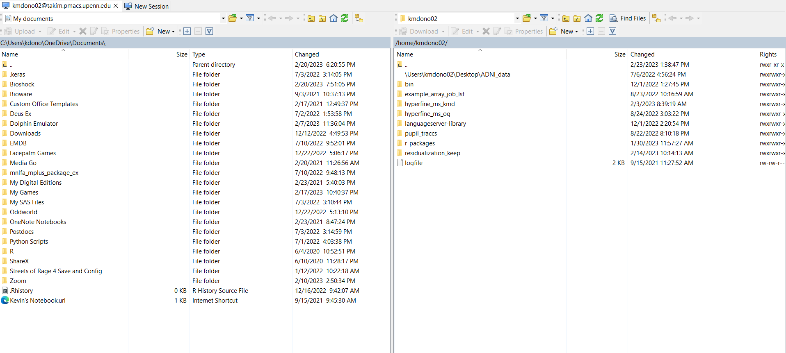
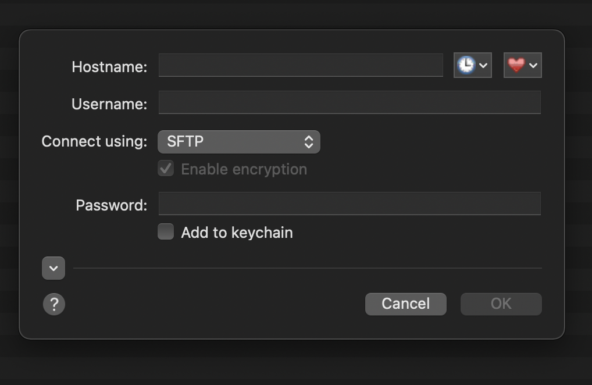
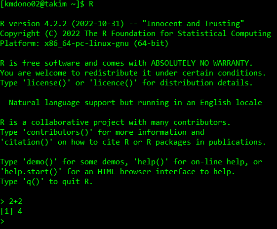
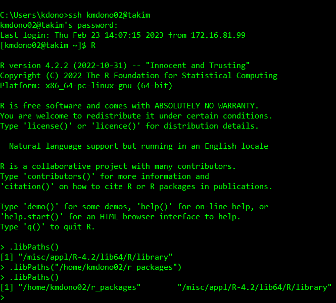
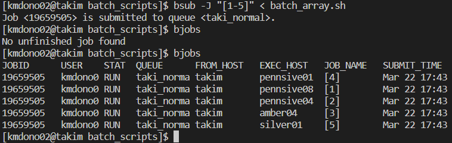

Cluster Computing
Cluster computing used here refers to the use of remote resources for a computation. This contrasts with local computing, the use of a resource such as a personal or laptop/desktop for a computation. An example could be running a script in a programming language (R, Python, etc.); this could be down with either computing type. What benefits are there in using these remote resources? Doing so can provide the following advantages over local computing:
- Have multiple computations running simultaneously
- Queue computations to run automatically
- Use more powerful computational resources (more memory, faster CPU, accessing GPUs, etc.)
which can make your computations much more efficient, and sometimes feasible when local resources are not sufficient. This can conceptualized with the following diagram:

where your instructions for the computations are sent to a central remote computer from your local computer, node, which then controls how these are sent out to be completed by the other nodes.
In this wiki entry, we will go over the basics of how cluster computing works with the resources available at Penn and how to interface with these resources on a fundamental level. More efficient and powerful ways are covered in the “Advanced Cluster Practices” wiki. Both wiki entries will discuss all of this topics in the context of the takim cluster on PMACS, though there are other clusters which you may have access to which operate slightly differently (e.g. CUBIC). Examples here are down in Windows, but Mac or Linux would be very similar.
Logging In
First, to access the takim cluster you must log-in like you would for any computer. This is done using the Command Line/Prompt in Windows or Mac. To log-in to takim, you must first be logged into the PMACS VPN using the Pulse Secure app. Once you have logged in, you can use
ssh pennkey@takim
where pennkey is your PennKey ID. The command line will then ask for your PennKey password.

You command line should show pennkey@takim ~$ with a blinking bar. This means you are logged-in and directly interfacing with a central node. Using the command line, you can now type instructions to this node, a Unix computer, as you would with a usual command line interface. Before we go over some basic Unix instructions, let’s talk about file access on the cluster.
File Explorer
Uploading, downloading, and editing files and interfacing between these files on your local and cluster computing resources can be done through the command line or a visual file explorer app. Using a file explorer is much easier since it as a Graphical User Interface (GUI) and mimics how you manage files on your local computer. The file explorer you use is dependant on the operating system (OS) of your local computer: WinSCP for Windows users and Fetch for Mac users are good options. We discuss both of them here:
WinSCP
After downloading and installing WinSCP, you again need to sign-in to the cluster, but this time through WinSCP itself. First select New Session in the upper-left corner, and then select New Site in the newly opened window. Here you specify the details of the cluster, including your log-in info like before. Click Save and then Log-in in this window to log-in to the cluster in WinSCP.

The window will disappear and you will see two windows; on the left is a file explorer for your local computer and on the right is a file explorer for your cluster directories.

You can then easily do various tasks such as create new and edit folders, drag and drop folders and files between the two explorers, search for files and folders, etc.
Fetch
On Mac, a good file explorer program is Fetch, which can downloaded at https://fetchsoftworks.com/. It is free to use for educational licenses, so members of Penn and other university can use it for free, otherwise you would have to pay. After installing Fetch and opening the program, a window should pop-up where you specify the server you wish to connect to. If one does not pop-up, you can select File and New connection at the top of the Fetch application. The window should look like this:

where you then fill-in your cluster information (username, password, etc.). Here is an example of a filled-in log-in to the takim cluster:

You can use the heart icon to save the server address as a favorite to easily access again, as well as the keychain to save passwords. Now that you are logged in, a file directory interface for the cluster will pop up, with the folder displayed being the one specified in the log-in by initial folder, usually you home directory on the server. An example on takim:

From this window, you can open up folders on the server by clicking on them, navigate the folder structure on the server using the Path icon, and upload/download files to and from the cluster by drag-and-drop as you would usually do with a file explorer interface.
Navigating the Terminal
Let’s go back to the command line/prompt/terminal from before which we use to send instructions to the cluster after logging-in. Again, this is a Unix-based computer, so we can use the usual Unix commands to send instructions through the command line. A few basic ones are:
cd: Move working directory to new place (e.g.cd Documents)ls: View contents of current working directorypwd: Print current working directoryw: Prints out infomation on who is logged-in to the cluster
There are also commands for creating folders, removing files and folders, copying files and folders, etc. You can view them and others here, though using the file explorer for these tasks is easier and less error-prone. Each command is done one-by-one, with Enter submitting the command. For example, let’s use pwd in my session:

which states that by default I am in my home directory on takim. A main task you will use the command line for is submitting computations to be done by the cluster computers, which we now discuss.
Submitting Jobs
Job refers to a set of computations which you send to the cluster computer to carry out. There a variety of options you have when organizing these instructions in terms of how these computations are distributed amongst the different nodes on the cluster, how output and status reports on these computations are saved, etc. We discuss three types of jobs which are most useful: 1) batch jobs, 2) array jobs, 3) interactive jobs. Batch jobs run a single set of computations in sequence: i.e., only one node is given all of the computations to complete. Array jobs all you to parrallel the computations across multiple nodes automatically through the job submission process, allowing for multiple computations to be down by multiple nodes at once. This can be very powerful in efficiently completing a large amount of computations which otherwise not be feasible. An interactive job all you to submit computations on-the-fly like you do when programming on your local computer. This contrasts with batch and array jobs which are not interactive: you send out a set of instructions, central node schedules these instructions to be completed and the entire set is attempted at once.
We first discuss interactive jobs in the context of R programming as they are the most intutive and then move toward the other two. While we discuss using the command line to complete these jobs, it is best done with the use of Visual Studio Code, which we discuss in the second set of cluster wikis.
Interactive Jobs
As a motivating example of an interactive job, suppose to do some R programming on a cluster computer. While this might not seem useful since you can program instead on your local computer, interactive jobs can be used to 1) test code on the cluster to make sure it works as expected when you submit the whole set of computations to the cluster and 2) allows to program on-the-fly with a computer likely more powerful then your local computer. You use other programming languages in this way, such as Python, but here we focus on R.
First, we have to start R on the cluster after logging-in. To use, just type in the command R and hit Enter in the command line:

This will open up a session of R on an available cluster node, which we can operate as you usually would with a R terminal. Available nodes are ones which are currently not doing any computations requested by you or other users. The command R will start a default R session, i.e. a version of R denoted as the “default” in the cluster. If you want to use another version of R installed on thr cluster, you would need the corresponding command. If you want to see what software is available and loaded on the cluster (for example, what versions of R are available), use the command module list:

Working in an interactive R session is identical to running R througn your command line on your local computer or using the R terminal panel in RStudio. To use a GUI-based interface with R interactive R job, see the second set of cluster wikis which discusses Visual Studio Code.
Now that we have our R session running, we are going to have to deal with 1) working directories and 2) R packages. The default working directory is always your home directory, which you can change using setwd in your R session per-usual. This will let you access files and paths in your R session on the cluster in reference to the working directory with relative path names (or can use absolute path names). R packages are more complicated. By default, a set of R packages has been installed to a central directory on takim which everyone has read access to (can load the packages) but not write access to (cannot install packages). We can use .libPaths() to view this folder’s name and installed. packages() to view which packages these are. It’s a lot of packages, so don’t submit this command only! We look at the first 10 packages by name:

What if a package you would like is not installed here? The default library where packages are which users across the cluster can use is not writeable by users. So we need to create our own folder to install packages to and read in when we use R. This is easiest in your File Explorer program (WinSCP or Fetch). For example, we can create a folder in our default home directory on the takim cluster, which only you have read/write access to. For me, the folder’s path is /home/kmdono02/r_packages/ where kmdono02 would be replaced with your username, though you can choose in path you would like. You’ll see below I have a number of installed packages in this folder.

When running R on the cluster, we then have to point to this directory as a libPath so that it knows to look here for a package we may want to load. This can be using the command .libPaths("/home/kmdono02/r_packages/") in your R session/script. We can use the usual library() command in R to load a package installed in the default and added R libPaths

Now that we have our packages all set up and know how to set our working direcotry, as well as referencing files and folders using absolute and relative path name, we are all set to use the R interactive session on the cluster just like we would if we were running R on our local computer through the R console/terminal. However, we usually don’t rin R through the terminal on our local computer as it is quite cumbersome. Instead we usually use an IDE which is more graphical/user-friendly like RStudio. Luckily we can also use IDE’s to run an R interactive session on the cluster! Two options are RStudio Server and Visual Studio Code (VSCode). VSCode is easier to set up, so we cover how to use it on the cluster in the advanced cluster wiki.
Batch Jobs
While interactive jobs are very useful, batch jobs in which you send a set of instructions to be carried out remotely by the cluster nodes are a powerful tool and provide the main benefit of cluster computing. These jobs consist of two files: 1) sh file and 2) programming script (R script, Python script). The sh file(s) provide the details about how the job is carried out and then the script provides the computations you want to be done by the nodes. For example, suppose you want to run a linear regression model in R on the cluster? The sh file could provide instructions such as what programming script to run, where to store output on the status of the job from the node, to run a batch job vs array job, etc. In the regression example, suppose we have our R script to run the model in the folder /home/kmdono02/r_scripts/. Then, our sh file could be
cd /home/kmdono02/r_scripts/ exec R CMD BATCH --no-save --no-restore run_model.R ../batch_output/log.out
The sh file tells the cluster node two things. First, set the working directory to the folder where the script is stored. Then, run the R script run_model.R in a R session on the node and print the log file to the folder batch_output in the directory /home/kmdono02, with the log file named log.out. The pieces --no-save and --no-restore are just options we can specify to the R CMD BATCH command. Note that these are all just command line commands, equivalent to if we typed these exact lines when we opend the command line in the beginning to interact with the cluster. Putting them in an sh file/script allows us to include a bunch of commands and submit them at once compared to submit each one-by-one, making the process more efficient. These files can also be used to include additional options as hinted at above, but will discuss in the advanced cluster wiki.
Now that the instructions for our job are all ready, the next step is to actually submit the job to the cluster to be completed. In our sh file-based setup, that means to submit the sh file to the cluster to be completed. For any job, the process is the following:
- Submit job to central node. Job is given a number as an ID in the system, with system specifications provided for the job (max memory, number of CPUs, etc.)
- Job is placed in scheduler, controlled by the central node. On
takim, the scheduler is called LSF (though others exist such as SLURM) - Scheduler handles queue of jobs from all users on cluster, depending on order of submission decides which to start
- Your job is next on the queue, central node submits to node to run job
We go through each process using the linear regression example in R, called run_model.R.
Example
Let’s consider the following R script:
library(tidyverse)
# Suspend running commands to pause script to see it in scheduler (since it runs very fast!)
Sys.sleep(30)
# Run model on iris dataset
model <- lm(Petal.Width ~ Petal.Length + Sepal.Width + Sepal.Length, data = iris)
# Store output as txt file
sink(file = "/home/kmdono02/cluster_examples/batch/r_output/model_summary.txt")
print(summary(model))
sink()Then, we can specifcy the sh file for instructions on how the cluster should complete this code, called batch.sh:
#BSUB -o /home/kmdono02/cluster_examples/batch/logs/run_model.out
#BSUB -e /home/kmdono02/cluster_examples/batch/logs/run_model.err
cd /home/kmdono02/cluster_examples/batch/batch_scripts
exec R CMD BATCH --no-save --no-restore ../r_scripts/run_model.R ../output/run_model.outThis is similar to file from before, just with some filenames changed and two new lines at the beginning. The lines starting with #BSUB provide the additional instructions to the node for running this job. The options -o and e provide locations to store the output and error files on the LSF-side, which details infomation regarding the node(s) used to complete the job, any errors that occured, etc. To submit this file, we use the following commands in our Command Line after logging into the cluster:
cd /home/kmdono02/cluster_examples/batch/batch_scripts
bsub < batch.shThe workhorse function for the job submitting process is bsub, which is where you specify the file detailing the submission. The addition of < enables bsub to “parse” your sh file for arguments labled #BSUB, which will automatically be included as options in the bsub command. We could have also removed those two lines from the sh file and included them directly in the bsub call:
bsub -o /home/kmdono02/cluster_examples/batch/logs/run_model.out -e /home/kmdono02/cluster_examples/batch/logs/run_model.err sh batch.shthough the first way is what we use from here on in these wikis. What happens after we run bsub? Recall our job enters the queue. To see the status of jobs we have submitted or are currently running, we use thr bjobs command. Let’s call it after running bsub and see the output:

As you can, it took a second after the job was submitted, but it shortly showed up to the queue under my username with a job ID and starting running immediatey. This meant there was an open node for my job right when I submitted it. In the event there is not such an opening, it will show with the status PENDING. Finally we can look at our folders to view our output. For model_summary.txt, we see the output we asked for R to print
Call:
lm(formula = Petal.Width ~ Petal.Length + Sepal.Width + Sepal.Length,
data = iris)
Residuals:
Min 1Q Median 3Q Max
-0.60959 -0.10134 -0.01089 0.09825 0.60685
Coefficients:
Estimate Std. Error t value Pr(>|t|)
(Intercept) -0.24031 0.17837 -1.347 0.18
Petal.Length 0.52408 0.02449 21.399 < 2e-16 ***
Sepal.Width 0.22283 0.04894 4.553 1.10e-05 ***
Sepal.Length -0.20727 0.04751 -4.363 2.41e-05 ***
---
Signif. codes: 0 ‘***’ 0.001 ‘**’ 0.01 ‘*’ 0.05 ‘.’ 0.1 ‘ ’ 1
Residual standard error: 0.192 on 146 degrees of freedom
Multiple R-squared: 0.9379, Adjusted R-squared: 0.9366
F-statistic: 734.4 on 3 and 146 DF, p-value: < 2.2e-16From output/run_model.out, we see everything from the R terminal for this script with a proc.time() call added:
R version 4.2.2 (2022-10-31) -- "Innocent and Trusting"
Copyright (C) 2022 The R Foundation for Statistical Computing
Platform: x86_64-pc-linux-gnu (64-bit)
R is free software and comes with ABSOLUTELY NO WARRANTY.
You are welcome to redistribute it under certain conditions.
Type 'license()' or 'licence()' for distribution details.
Natural language support but running in an English locale
R is a collaborative project with many contributors.
Type 'contributors()' for more information and
'citation()' on how to cite R or R packages in publications.
Type 'demo()' for some demos, 'help()' for on-line help, or
'help.start()' for an HTML browser interface to help.
Type 'q()' to quit R.
> library(tidyverse)
Attaching packages tidyverse 1.3.2
ggplot2 3.4.0 purrr 1.0.0
tibble 3.1.8 dplyr 1.0.10
tidyr 1.2.1 stringr 1.5.0
readr 2.1.3 forcats 0.5.2
Conflicts tidyverse_conflicts()
dplyr::filter() masks stats::filter()
dplyr::lag() masks stats::lag()
>
> # Suspend running commands to pause script to see it in scheduler (since it runs very fast!)
> Sys.sleep(60)
>
> # Run model on iris dataset
> model <- lm(Petal.Width ~ Petal.Length + Sepal.Width + Sepal.Length, data = iris)
>
> # Store output as txt file
> sink(file = "/home/kmdono02/cluster_examples/batch/r_output/model_summary.txt")
> print(summary(model))
> sink()
>
> proc.time()
user system elapsed
3.487 0.451 64.499 and finally we have our logs. The error log file is empty since no error occured. File logs/run_model.out shows the cluster-related log:
Sender: LSF System <jszostek@pennsive03>
Subject: Job 19258593: <#BSUB -o /home/kmdono02/cluster_examples/batch/logs/run_model.out;#BSUB -e /home/kmdono02/cluster_examples/batch/logs/run_model.err; cd /home/kmdono02/cluster_examples/batch/batch_scripts;exec R CMD BATCH --no-save --no-restore ../r_scripts/run_model.R ../output/run_model.out> in cluster <PMACS-SCC> Done
Job <#BSUB -o /home/kmdono02/cluster_examples/batch/logs/run_model.out;#BSUB -e /home/kmdono02/cluster_examples/batch/logs/run_model.err; cd /home/kmdono02/cluster_examples/batch/batch_scripts;exec R CMD BATCH --no-save --no-restore ../r_scripts/run_model.R ../output/run_model.out> was submitted from host <takim> by user <kmdono02> in cluster <PMACS-SCC> at Sun Feb 26 13:37:32 2023
Job was executed on host(s) <pennsive03>, in queue <taki_normal>, as user <kmdono02> in cluster <PMACS-SCC> at Sun Feb 26 13:37:33 2023
</home/kmdono02> was used as the home directory.
</home/kmdono02/cluster_examples/batch/batch_scripts> was used as the working directory.
Started at Sun Feb 26 13:37:33 2023
Terminated at Sun Feb 26 13:37:39 2023
Results reported at Sun Feb 26 13:37:39 2023
Your job looked like:
------------------------------------------------------------
# LSBATCH: User input
#BSUB -o /home/kmdono02/cluster_examples/batch/logs/run_model.out
#BSUB -e /home/kmdono02/cluster_examples/batch/logs/run_model.err
cd /home/kmdono02/cluster_examples/batch/batch_scripts
exec R CMD BATCH --no-save --no-restore ../r_scripts/run_model.R ../output/run_model.out
------------------------------------------------------------
Successfully completed.
Resource usage summary:
CPU time : 3.47 sec.
Max Memory : 59 MB
Average Memory : 59.00 MB
Total Requested Memory : -
Delta Memory : -
Max Swap : -
Max Processes : 4
Max Threads : 6
Run time : 5 sec.
Turnaround time : 7 sec.
The output (if any) follows:with a handy resource usage summary detailing time of computation, requested (if applicable) and used memory, etc. We have run our first batch job! This format is generalizable for all cases where you want to run a single R script one time. Make sure to specify .libPaths() in your R script if you are using user-installed packages. For running a Python script instead, everything is the same except the use of exec R CMD BATCH. Instead you replace this with python ../py_scripts/run_model.py for example. Requesting an output file from the Python terminal like we did here is a little more complicated as a it must be done in the Python script itself, which we cover in the advanced cluster wiki.
Array Jobs
The last type of job that we cover is an array job. This allows you to submit a sequence of batch jobs simulatenously, which are similar but change in one or more arguments/indices. These jobs are sent to the scheduler at once after submitting one array job, handled like a set of batch jobs of the same size. For example, suppose you have a image processing pipeline to wish to run on an image from 10 subjects. You want to run the same pipeline on each subject, so the code to run on each subject is going to be the same except for reading and writing data based on the subject ID. Instead of writing 10 scripts or writing one script and then submitting 10 separate jobs where we manually specify the subject, can automate it with an array job.
The process is the same as with a batch job, in that we will a bsub call, an sh file containing instructions, and then probably some programming language script such as R. The difference is we now have to specify the indices of the array which constitute the array job in the bsub call and sh file. Suppose we want to run our batch job example (linear regression model), but run it on five different sets of data (data_1.csv, …, data_5.csv) where each dataset has outcome y and covariates x1 to x3 (the data sets are simulated from a corresponding linear regression model for illustration). For the bsub call, instead of
cd /home/kmdono02/cluster_examples/batch/batch_scripts
bsub < batch.shwe would need to call
cd /home/kmdono02/cluster_examples/batch/batch_scripts
bsub < -J "[1-5]" batch.shin our cluster terminal. The use of -J "[1-5]" tells the scheduler to create an array job with indices 1 to 5. We can use other types of indices, such as -J "[2,4]" which will create an array job with only indices 2 and 4. The way these indices relate to what instructions are completed in your sh is that for each job in the array, the corresponding index becomes a Unix environment variable which you can reference inside of your job. This variable has the name LSB_JOBINDEX, which can you use in your R and Python scripts. However, you will also want to have some way to view logs related to each array job to view any errors or output from the cluster which is specific to that job in the array. Recall before we added in #BSUB -e /home/kmdono02/cluster_examples/batch/logs/run_model.err for example to print out an error log for the submitted job. However, this was suboptimal since there is no job ID attached to it. We knew before what it was related to, since we were only running one sh file with the name run_model. Now that we have an array job which contains multiple jobs (5 for example), we need error logs for each one with a name to reference. Luckily this is very easy, and we have two options. First, recall each batch job receives a numeric ID once it has been submitted by the scheduler. This also becomes an environmental variable which we can access, labeled LSB_JOBID. We can also use the variable %J in our sh file and/or bsub commands to refer to the job ID before run. For example, we can replace the previous #BSUB line in our batch.sh file with #BSUB -e /home/kmdono02/cluster_examples/batch/logs/run_model_%J.err to paste in the ID of the given batch job into the file name of that job’s error log and have it be written to our log directory to view. How does this relate to array jobs? Recall an array job is just a sequence of submitted batch job. Thus, each job in our array also gets a job ID to reference, which is contained in LSB_JOBID and %J. However, these IDs are long and not interpretable, what if we just want to refer to the index within our specific array job (job 1, job 2, etc.)? We just use LSB_JOBINDEX and %l respectively instead. We also add in %J or %l to the other #BSUB lines in our sh file, as well as our exec R CMD BATCH call when we specify the Rout filepath.
Let’s do the regression example with indices 1 through 5. We’ll specify a new sh file, call it batch_array.sh. This sh file will be
#BSUB -o /home/kmdono02/cluster_examples/batch/logs/run_model_array_%l.out
#BSUB -e /home/kmdono02/cluster_examples/batch/logs/run_model_array_%l.err
cd /home/kmdono02/cluster_examples/batch/batch_scripts
exec R CMD BATCH --no-save --no-restore ../r_scripts/run_model_array.R ../output/run_model_array_$LSB_JOBINDEX.outwhere run_model_array.R will be our R script to run the array regression model example. We’ll simulate data within each array job to reflect one of the 5 datasets which we will run the model on, and control them by setting the seed. Thus, run_model_array.R is the following:
library(tidyverse)
# Suspend running commands to pause script to see it in scheduler (since it runs very fast!)
Sys.sleep(30)
# Generate dataset
n <- 100
i <- as.numeric(Sys.getenv('LSB_JOBINDEX'))
set.seed(i)
x1 <- rnorm(n); x2 <- rnorm(n); x3 <- rnorm(n); errors <- rnorm(n, mean = 0, sd = 0.25)
y <- 2*x1+3*x2+4*x3+errors
simdata <- data.frame(x1, x2, x3, y)
# Run model
model <- lm(y ~ x1 + x2 + x3, data = simdata)
# Store output as txt file
sink(file = paste0("/home/kmdono02/cluster_examples/batch/r_output/array_model_summary_", i, ".txt"))
print(summary(model))
sink()We have simulated data from a linear regression model, of sample size 100, with normally distributed errors with standard deviation 0.25 and 3 covariates of mean 0, with their regression parameters being 2, 3, and 4 respectively. We specify the seed with each dataset as the array index, using Sys.getenv('LSB_JOBINDEX'). This reads-in the environmental variable and then converts to it numeric (is character by default in R). We then fit the regression model and then print the output to our output folder with the index included for reference. We can combine this with the above sh file and below terminal commands to run our array job:
cd /home/kmdono02/cluster_examples/batch/batch_scripts
bsub < -J "[1-5]" batch_array.shThe queue is now the following after submitting our array jobs:

Let’s do so and look at the outputs. First, the output file for one of the arrays.
Sender: LSF System <jszostek@silver01>
Subject: Job 19659506[1]: <[1-5]> in cluster <PMACS-SCC> Exited
Job <[1-5]> was submitted from host <takim> by user <kmdono02> in cluster <PMACS-SCC> at Wed Mar 22 17:46:27 2023
Job was executed on host(s) <silver01>, in queue <taki_normal>, as user <kmdono02> in cluster <PMACS-SCC> at Wed Mar 22 17:46:27 2023
</home/kmdono02> was used as the home directory.
</home/kmdono02/cluster_examples/batch/batch_scripts> was used as the working directory.
Started at Wed Mar 22 17:46:27 2023
Terminated at Wed Mar 22 17:47:02 2023
Results reported at Wed Mar 22 17:47:02 2023
Your job looked like:
------------------------------------------------------------
# LSBATCH: User input
#BSUB -o /home/kmdono02/cluster_examples/batch/logs/run_model_array_%I.out
#BSUB -e /home/kmdono02/cluster_examples/batch/logs/run_model_array_%I.err
cd /home/kmdono02/cluster_examples/batch/batch_scripts
exec R CMD BATCH --no-save --no-restore ../r_scripts/run_model_array.R ../output/run_model_array_%I.out
------------------------------------------------------------
Exited with exit code 1.which is just a summary of what was submitted for the entire array job and what the exit code was, just like would happen for a batch job. Then we have 5 resource reports inside the file one for each of the arrays. The other array’s output files are the same: all resource usages for all arrays are stored in each. Then, you could just use #BSUB -o /home/kmdono02/cluster_examples/batch/logs/run_model_array.out to avoid the duplicate files. The R terminal output is stored in ../output/run_model_array_1.out for the first array’s R terminal for example. Finally, we can view the output of the model fit requested by our R script in /home/kmdono02/cluster_examples/batch/r_output/array_model_summary_1 for example, which is as expected. We have now run our first array job!
Canceling a job
To complete our introduction to cluster computing, we will cover one last scheduling command: bkill. This is how you tell the scheduler to cancel either a pending job that you submitted and am waiting in the queue to complete, or a currently running job. This is essentially to do when you are not longer interested in running a job to completion, as it clears up the queue for others to have their jobs run. To call a specific job, just call bkill -b x in your terminal where x is the job ID you wish to cancel. This ID can always be viewed in the bjobs output, as well as your .out file from the bsub submission. If you want to cancel all jobs under your cluster user name, just use bkill -u username where username is your user name.
Conclusion
In this wiki, went over the basic of running jobs on the takim cluster, particularly R and Python scripts. We covered to how to interact with the cluster using the terminal, handle file management using WinSCP and Fetch, as well as discussed a variety of job types and how to run them. In the next wiki, we will discuss some more advanced cluster techniques, generally centered around using Visual Studio Code to do all of your cluster work in one application.